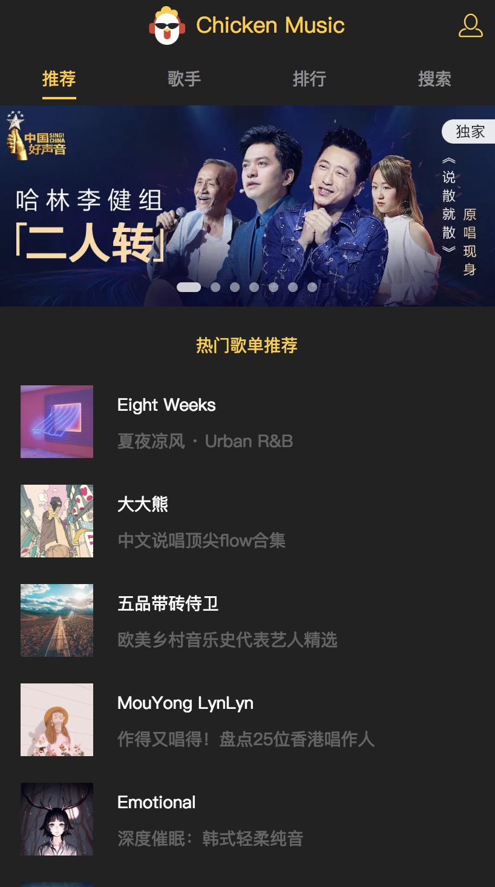

部署webpack-dev-server到生产环境
2018-08-10
前言
我哥们仿着慕课网做一个vue音乐播放器，希望我部署到远程服务器（所以你拥有一台私人服务器，就像你拥有了大号的充电宝，人人借用）。因为用webpack-dev-server做了一些接口代理的工作（代理qq音乐的API），所以和传统纯前端项目还有所不同，不是打包压缩扔到nginx静态目录就行。需要在生产上启动这个webpack-dev-server服务。
step by step
SSH登录远程服务（前提是你和我一样拥有一台酷炫的centos云服务器）
1
ssh 用户名@ip
安装node服务
如果不会安装，这个教程对你帮助也不大。教程在这
代码拉取到远程服务器
通过git拉取代码到远程服务器。
1
2
3
4cd 到你指定的目录下
git clone https://github.com/gkqmike/vue-music
cd vue-music
npm install安装pm2，管理node进程。
远程服务器上可不像本地，直接npm run dev，就万事大吉，它需要时刻一直开启node服务，并且出现问题会帮你自动重启node服务，还能监控一些node服务的情况。如何安装？
1
npm install -g pm2
如何用pm2启动node服务器，教程在这。这里直接贴出pm2启动npm的命令：
1
pm2 start npm --watch --name myApp -- run dev
查看是否启动成功
1
2
3
4
5netstat -tunlp
启动成功后
Proto Recv-Q Send-Q Local Address Foreign Address State PID/Program name
tcp 0 0 0.0.0.0:7000 0.0.0.0:* LISTEN 23976/node
如果端口启动不成功，在webpack.dev.config.js里修改devServer中host配置1
2
3devServer {
host: '0.0.0.0'
}
- webpack-dev-server模式，报错，invalid host header。
因为webpack-dev-server默认是开发模式，默认无法通过远程服务访问。报错，invalid host header。只需要在webpack配置dev-server的添加一行配置即可。
1 | devServer: { |
场外帮助
如果按照上面做，你还不能访问，sorry，我不是码神，但是我有几个方式解决方式。
- 在服务器上用npm run dev启动项目，看有没有报错。
- 看一下端口是否在安全组网段中，阿里云服务器有对外的网段限制。
- 可能防火墙默认不允许外网访问自定义端口，需要手动打开：
1
2
3/sbin/iptables -I INPUT -p tcp --dport `你的端口` -j ACCEPT
service network restart
总结
服务器部署往往会有很多意想不到的问题，这是开发环境所不能预料的，这更考验你解决的能力。所以平时需要积累一些运维部署能力，其实没有也没关系，只要有一个有私人服务器的朋友。
访问地址：caichengnan.com:7000
项目源码：https://github.com/gkqmike/vue-music

写作时间：
20180811